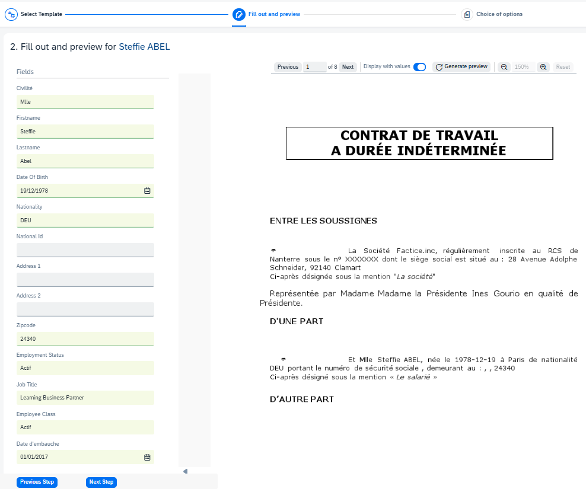
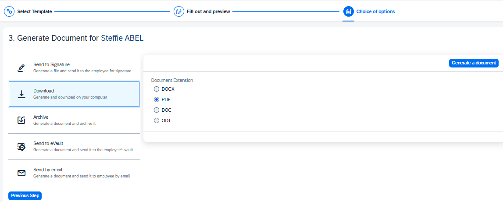

Contenu
Générer un document pour un salarié
Les gestionnaires peuvent générer des documents pour les salariés et pour les types de documents pour lesquels ils disposent des permissions nécessaires. Lors de la génération d'un document, chaque modèle de document contient des champs remplis avec les informations relatives au salarié et d'autres champs à compléter par le gestionnaire si besoin.
Navigation: My Population > sélectionner le salarié pour lequel vous voulez générer le document > choisir generate a document

1.Étape Sélectionner un modèle :
Depuis la page Select template du salarié, sélectionnez le modèle de document que vous voulez générer.
- Sélectionnez le type de document correspondant.
- Sélectionnez le modèle de document à partir duquel vous souhaitez générer le document.
- Sélectionnez la date de génération que vous souhaitez.
- Sélectionnez Suivant.
2.Étape Remplir et prévisualiser :
Les champs sont automatiquement remplis avec des informations extraites du profil du salarié depuis SuccessFactors. Certains champs doivent être complétés manuellement par le gestionnaire.
Cliquez sur le bouton Générate preview pour consulter le document. Une fois terminé, cliquez sur le bouton Suivant pour générer le document.
3.Étape Generate Document :
- Send to signature:Générez un fichier PDF et l'envoyez au salarié pour le faire signer par voie électronique.
- Download: Générez un fichier PDF, DOC(X) ou ODT (selon les formats de sortie configurés pour le modèle de document) et téléchargez-le sur votre disque dur.
- Archive: Cette option permet de générer un fichier PDF et de l’archiver dans le profil du salarié dans PeopleDoc.
- Send to eVault:Générez un fichier PDF et envoyez-le dans Employee Vault.
- Send by email: Envoyez le document par email au salarié, si son adresse est enregistrée dans son profil de salarié.
Envoyer le document en signature éléctronique
Après avoir généré le document, vous pouvez l’envoyer pour une signature électronique avec DocuSign si vous disposez des permissions nécessaires.
- Sélectionnez l’option Send to Signature.
- Sélectionnez le type de signature dont vous avez besoin pour ce document.
- Entrez le Titre du document. Utilisez un ou plusieurs raccourcis de Nom de modèle, Type de document ou Nom de salarié pour remplir automatiquement le champ du titre du document.
- Sélectionnez le bouton Send to signature.
1.Choisir les signataires:
Depuis la page Choice of signatories , vous pouvez:
- Sélectionnez un ensemble de signataires déja prédéfini.
- Ajouter un RH ou un manager dans votre processus de signature.
- Choisir entre une notification par message ou une double authentification.
- Sélectionnez Suivant.
2.Placer les signataires:
Depuis la pageSignature placement , vous pouvez:
- Placer les signatures dans la zone dédié.
- Sélectionnez Suivant.
3.Choisir les options de signature:
Depuis la page Choice of options, vous pouvez:
- Ajouter un message supplémentaire si besoin.
- Choisir une date limite de signature.
- Choisir de recevoir une notifications par email lorceque les signataires accepetent ou refusent de signer.
- Envoyer le document en signature en cliquant sur Send to signature.
Télécharger le document généré
Après avoir généré le document, vous pouvez le télécharger sur votre ordinateur.
Sélectionnez l’option Download. Sélectionnez le format du document, si applicable, et cliquez sur Télécharger. Le ou les formats disponibles dépendent de ce qui a été configuré au niveau du modèle de document.
Archiver le document généré dans le dossier du salarié
Après avoir généré le document, vous pouvez générer un fichier PDF à archiver dans le dossier du salarié.
- Sélectionnez l’option Archiver.
- Dans le champ Titre du document, saisissez un nom pour le document. Utilisez un ou plusieurs des raccourcis disponibles pour remplir automatiquement le champ Titre du document.
- Cliquez sur le bouton Archiver.
Envoyer le document généré vers l’Employee Vault
Après avoir généré le document, vous pouvez générer un fichier PDF et l’envoyer vers l’Employee Vault.
- Sélectionnez l'option Envoyer dans le coffre-fort électronique.
- Entrez le Titre du document. Vous pouvez utiliser un ou plusieurs raccourcis de Nom de modèle, Type de document ou Nom de salarié pour remplir automatiquement le champ du titre du document.
- Cochez la case pour envoyer un e-mail de notification au salarié.
- Sélectionnez le bouton Send to evault.
Envoyer le document généré par e-mail
Après avoir généré le document, vous pouvez l'envoyer au salarié par e-mail si leur adresse e-mail est bien renseignée dans leur profil salarié.
- Sélectionnez l’option Envoyer par e-mail.
- Le salarié recevra le document généré à l'adresse e-mail renseignée dans son profil salarié.